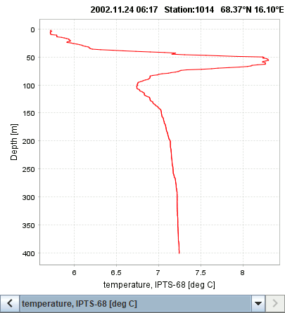

The CTD module displays CTD sensor samplings as a function of depth.

The sensor data to be shown is selected in the column selector located under the x-axis. Use the buttons and to skip between CTD files.
When the mouse pointer is moved over the echogram, the CTD station closest in time will be shown.
CTD stations are also shown by an overlay on the map.